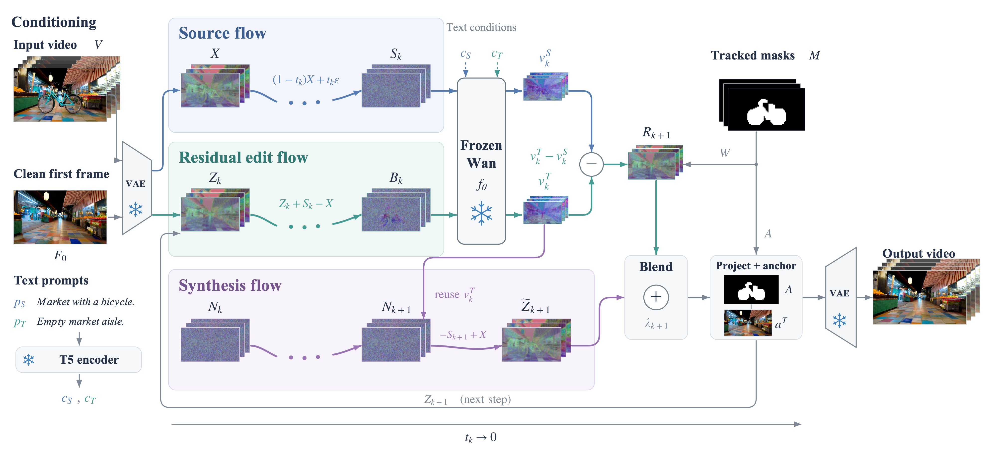

Source flow
An analytic path provides a source-aligned reference without numerical inversion.
Video object removal · Training-free · Inversion-free
* Equal contribution
Remove the object and its visual effects.
Reconstruct the scene behind it.
The idea
Removing an object exposes the background it once concealed. TripleFlow couples localized erasure with persistent background synthesis, while anchoring unedited regions to the source video.
See it in motion
Camera motion, occluded backgrounds, and object-associated effects. Play each input and result together.
Selected qualitative examples from captured wild videos and Wan-generated scenes. Source and result are shown at matching times; clips are not used here as a benchmark average.
How it works
A generated clean first frame guides appearance. Coupled trajectories coordinate preservation, removal, and completion throughout inference.

An analytic path provides a source-aligned reference without numerical inversion.
Localized source–target velocity differences suppress the masked foreground.
A persistent state accumulates target updates and feeds background content back into the edit.
Side by side
Compare background details, scene geometry, and temporal consistency across five methods.
These are selected synthetic showcase scenes, not aggregate benchmark results. All methods are displayed with matching frame timing. ContextFlow uses the stored Wan 5B adaptation with its independently generated MagicQuill first frames. OmniEraser uses its stored 512 × 512 framewise results, restored to the source dimensions. Full experimental settings and benchmark evaluations are in the paper.
Reference
@article{wang2026tripleflow,
title={TripleFlow: Training-Free Video Object Removal by Bridging Residual Editing and Native Generation},
author={Wang, Songhe and Wei, Lifu and Xu, Shuolin and Kamhoua, Charles A. and Miller, David},
journal={arXiv preprint arXiv:2609.39157},
year={2026},
doi={10.48550/arXiv.2609.39157},
url={https://arxiv.org/abs/2609.39157}
}